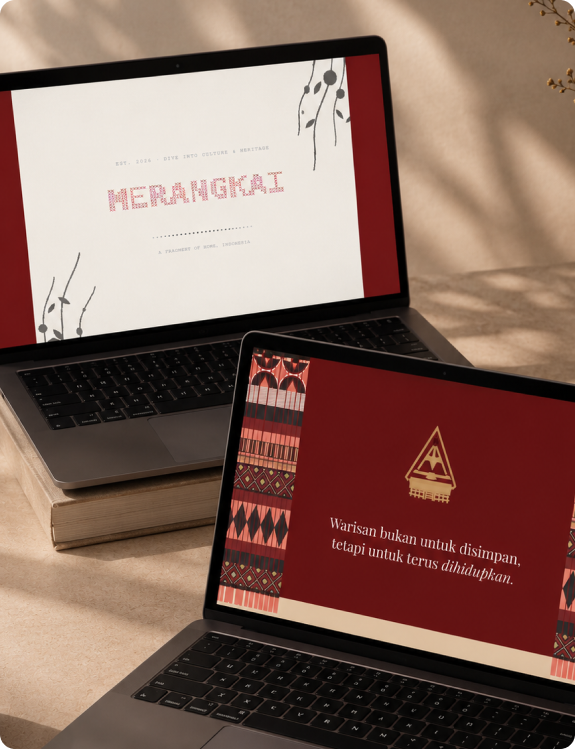
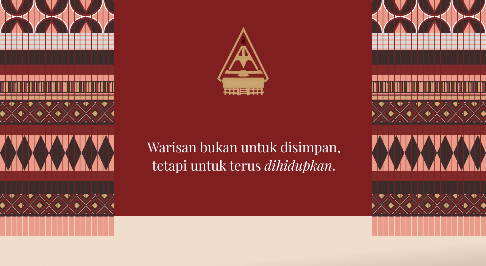
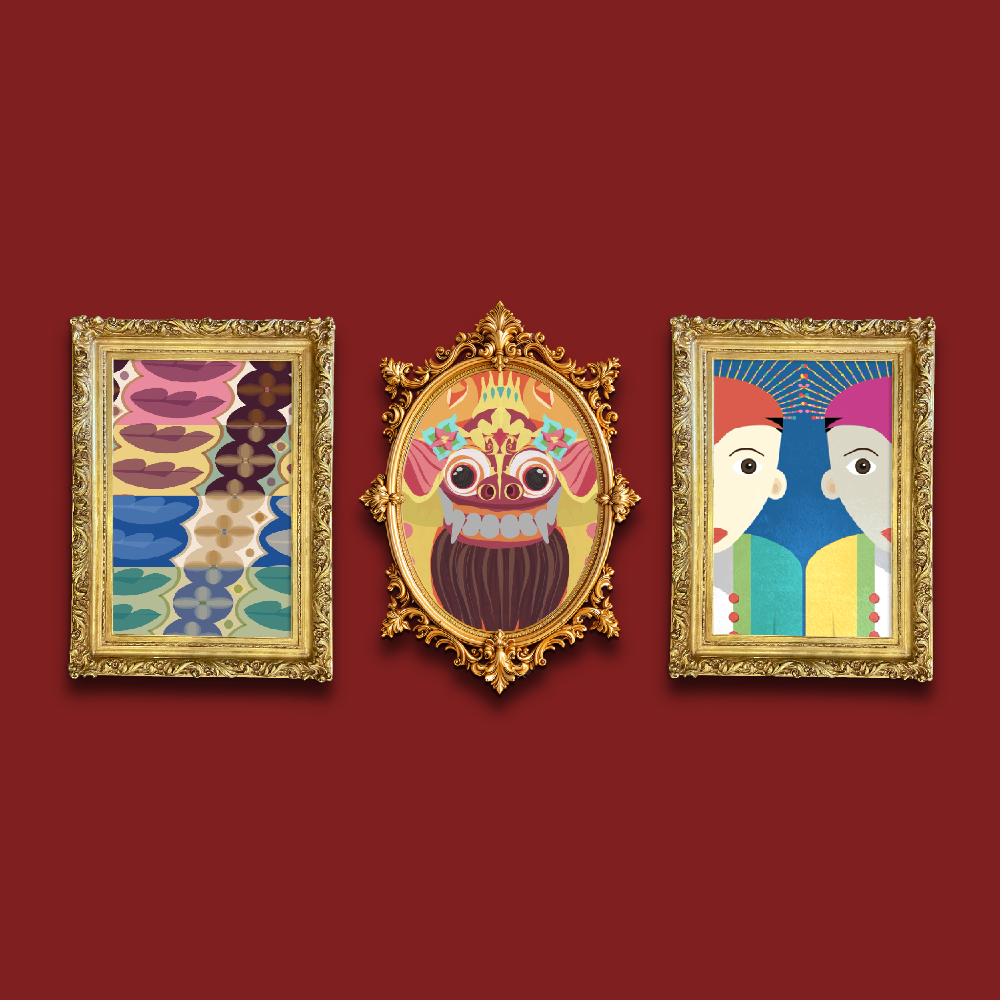
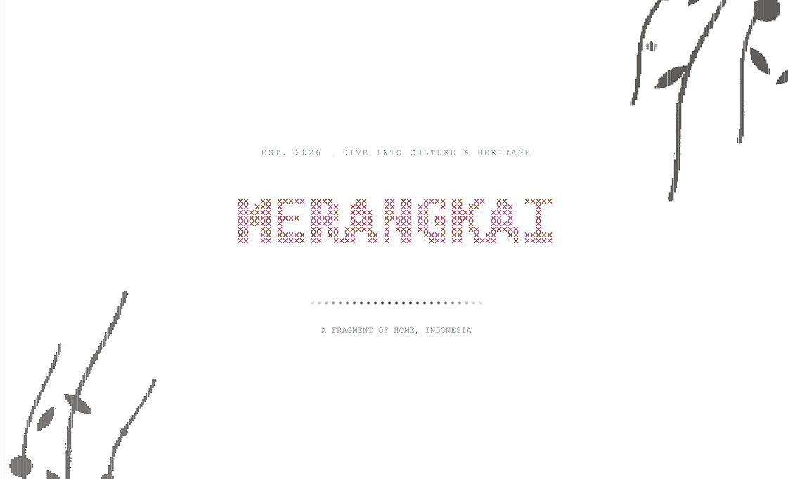

The Problem & Research:
How might we preserve Indonesian cultural heritage while making it feel engaging, accessible, and relevant in a digital world?
Three traditions, three ways in
I chose traditions with strong visual languages, then asked what each one does best: move, tell a story, or repeat as pattern. That quality became its interaction.
| Tradition | Origin | What it carries | Explored through |
|---|---|---|---|
| Ondel-ondel | Betawi, Jakarta | Giant paraded figures, traditionally believed to ward off bad spirits | Animated narrative |
| Barong | Bali | A protective spirit at the center of a dance of good against evil | Interactive visuals |
| Batik | Java and across Indonesia | Wax-resist cloth where every motif holds meaning | Generative patterns |
The opportunity
Make heritage approachable to digital audiences.
Preserve cultural stories through new media.
Turn traditional visual systems into interaction.
Reinterpret culture without losing its identity.
The Solution:
Merangkai means “to string together.” The gallery connects tradition and technology: visitors explore Ondel-ondel, Barong, and batik through animated stories, interactive visuals, and generative patterns, so each tradition is something you experience, not just read about.

Tech behind it
Three traditions, each built out fully, instead of a wide archive that only shows photos and captions.
Generative art invites new forms, but each piece keeps the original motifs readable so the tradition is never lost in the effect.
An animated Lottie intro sets the mood before the gallery opens. It adds a moment of load time, but frames the site as an experience, not a database.
Evaluation:
Merangkai is an experience, not a task-based tool, so “did they finish the flow” isn’t the right test. These are the signals I’d track instead.
Time spent and interactions per tradition, compared with a static page of the same content.
A one-question recall check at the end. Engagement without understanding would mean the art overshadowed the culture.
Feedback from people who grew up with these traditions is the real check that the reinterpretation stayed true.
Reflection:
Small details break real launches. A filename casing mismatch worked on my Mac but failed Vercel’s Linux build, so now I test the production build before shipping.
Whether understanding keeps up with engagement. If people play but can’t say what they saw, the gallery needs more story.
More traditions from other islands, and sharing the gallery with Indonesian communities abroad for feedback.

